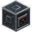
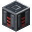
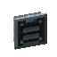
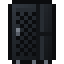
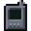
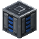
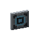
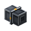
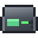
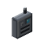

Networks: pages
Networks
Power
Getting FE into a network, storing it in Capacitor Banks, the order the energy pool fills and drains in, and what a network spends.
On this page
A network runs on FE (Forge Energy). Encoded Logistics doesn't make any: you bring it in from another mod's generators, through a  
The energy pool#
A network's energy is one pool made of:
- its controller's buffer:
controller.energyPerBlock(default 25,000) FE per Network Controller block, or the buffer of the working rack Network Controller or Midrange System; - every Capacitor Bank on the network;
- every Energy Storage Drive in the network's drive holders (Drive Bays, Disk Drives and rack storage), whether or not the holder has its lane. See Storage Dies and Drives.
The controller's Network screen shows the whole pool as Stored, and a comparator against a controller block reads it.
Fill and drain order#
FE coming into the network fills, in order:
- Energy Storage Drives,
- the controller,
- Capacitor Banks,
- a standby rack Network Controller's own buffer, with whatever is left.
The network's drain, and FE taken for work, comes out in this order:
- Capacitor Banks,
- Energy Storage Drives,
- the controller.
So the controller stays topped up while the banks and drives take the swings, and the controller's buffer is the last thing to run dry.
Getting FE in#
| Way in | Limit |
|---|---|
| A Power Inlet's port | power.inletMaxInput (default 16,384) FE/t per inlet |
| Any face of a Network Controller block | controller.maxReceivePerBlock (default 4096) FE/t per block |
| Any face of a Capacitor Bank, with direct IO on | power.capacitorMaxTransfer (default 16,384) FE/t per bank |
| An  Ingress Port in Energy mode, from the block it faces | Its energy rate (Cable parts) |
| A  Server Rack's connection points | rack.rackPowerMaxInput (default -1) FE/t across them all; -1 means the same as a Power Inlet |
A Power Inlet (and an Ingress Port or a rack's connection points) accepts nothing while it isn't on a controller's network, or while the network is in an error state: an invalid controller structure, or a conflict.
Tip
An Ingress Port is a device, so it only works while the network is online: it can't restart a network that has run dry. Use Power Inlets (or the controller's faces) for the main supply.
Power Inlet#
encodedlogistics:power_inlet
The Power Inlet passes FE straight into its network's pool. It takes FE only through its front, the port; cables connect on its other five faces. Like a dispenser, its port faces you when you place it.
- It takes up to
power.inletMaxInput(default 16,384) FE per tick. - It uses no lanes and drains nothing.
- With
power.inletBufferabove 0 (it's 0 by default), it also holds that much FE while the network is full, and passes it on as soon as there's room. - It lights up while FE is coming in (it has received some in the last second). Jade shows
Receiving N FE/t.
You can place it straight against a controller block or anywhere on the network's cables. Use several for more input.
Capacitor Bank#
A Capacitor Bank stores power.capacitorCapacity (default 2,000,000) FE as part of its network's pool. Cables connect on all six faces; it uses no lanes and drains nothing. It moves at most power.capacitorMaxTransfer (default 16,384) FE per tick in and out, both to the network and through its faces.
- Direct IO. With
power.capacitorDirectIO(default true), every face also takes and gives FE directly, so a generator can push into it and another mod's cable can pull from it. Pulling from it takes from the network's pool. - The screen. Right-click it: an energy bar, the fill percentage, and Stored, Input, Output and Capacity, with input and output averaged over the last second. It has no slots.
- The gauge. The block shows its fill in four segments. A comparator reads 0 when it's empty and 1 to 15 as it fills.
- Charging a Handheld Terminal. Use and hold a

Handheld Terminal against the bank to charge it atreach.handheldChargeRate(default 4096) FE per tick. See Handheld Terminal.
Screenshot needed
Three Capacitor Banks in a row cabled to a network, their front gauges at different fill levels, with the Capacitor Bank screen open showing the energy bar, fill percentage and the Stored, Input, Output and Capacity figures
docs/site-src/images/networks/capacitor-bank.png · 1280x720
Creative Capacitor Bank#
The 
What a network spends#
Every tick the network runs, it drains:
controller.drainPerBlock(default 2) FE/t for each Network Controller block (a rack controller's drain is part of its rack's instead);- the passive drain of every other block on it: each cable block, each device, each part. Fractions of an FE carry over from tick to tick.
The Network screen shows the total as Usage, and hovering over a device in its grid shows that kind's passive drain. Common drains:
| Block | Drain (FE/t) |
|---|---|
| Network Cable, | 0.05, 0.2, 0.1 |
| 2, plus 0.5 per drive | |
| A terminal | storage.terminalDrain (default 0.5) |
| Any other cable part | storage.partDrain (default 0.5) |
| A  Point-to-Point Link endpoint | reach.p2pDrain (default 0.5) |
| A  Segment Isolator (paid by each side) | power.isolatorDrain (default 0.5) |
Work costs extra, taken from the pool as it's done: ports pay per item, bucket or FE moved, Fabricators per craft, and so on. Rack devices have their own drains: Rack devices. A rack's 
Getting FE out#
Besides a Capacitor Bank's faces, a network can give energy away through:
- an
 Egress Port in Energy mode, which pushes FE into the block it faces;
Egress Port in Energy mode, which pushes FE into the block it faces; - a

Small Wireless Bridge with power from network on, which tops up an Arcforge machine (Arcforge).
An energy Point-to-Point Link moves FE too, but straight from the block its input faces to the blocks its outputs face, without going through the pool.
Egress Ports and Small Wireless Bridges never take the pool below rack.machinePowerReserve (default 0.25) of its capacity, so the network keeps running.